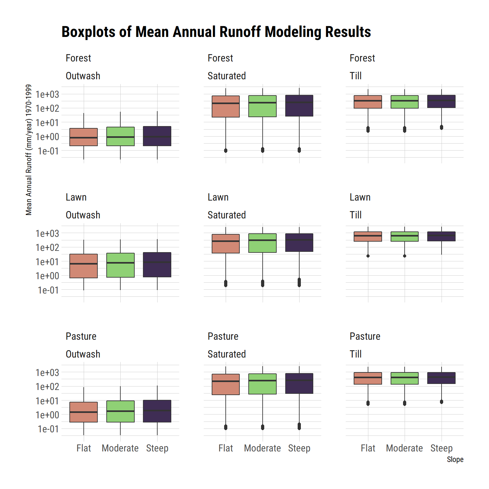
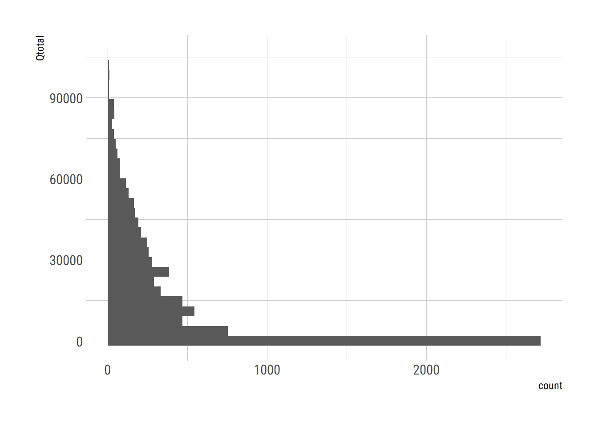

Chapter 3 Hydrology
3.1 Overview
This document provides an overview of hydrology simulation methods and results for the Puget Sound Stormwater heatmap. Continuous hydrology simulation of was performed using regional pre-calibrated parameters. Batched simulations were run for combinations of land cover, soils, and slopes across the Puget Sound domain. Results are stored in a cloud-based database. It is intended to be used in conjunction with data derived from the stormwaterheatmap or other geospatial data sources to quickly model rainfall-runoff relationships across Puget Sound.
3.2 Modeling approach
The hydrologic modeling approach was developed to replicate as much as feasible, commonly applied continuous simulation hydrologic analysis for stormwater in Puget Sound. Ecology developed guidance for continuous simulation modeling as described in the Stormwater Manual for Western Washington (Department of Ecology 2014).
This guidance calls for the application of continuous simulation models based on the Hydrologic Simulation Program Fortran (HSPF). HSPF is a lumped-parameter rainfall-runoff model developed by the USGS and EPA. HSPF is generally used to perform analysis on hydrologic processes related to effects of land cover, interception, surface ponding and soil moisture retention. Although maintenance development of HSPF has not occurred since 1997, it is currently distributed by EPA under the Better Assessment Science Integrating Point and Non-point Sources (BASINS) analysis system. In Western Washington, application of HSPF to stormwater design is routinely performed through the Western Washington Hydrology Model (WWHM), a Windows-based graphical user interface program with built-in meteorologic data and modules specific to stormwater analysis.
HSPF contains a number of specialized modules that are not used by WWHM. These include modules related to snowmelt, sediment budgets, and specific water quality routines. The primary HSPF routines used by WWHM are designated as IWATER (water budget for impervious land cover) and PWATER (water budget for pervious land cover). A graphical schematic of the PWATER routine is shown in Figure 3.1.
Figure 3.1: HSPF PERLND Conceptual Model
3.2.1 Hydrologic Response Units
Modeling was performed on discretized landscape units based on common soils, land cover, and slope charcateristics known as hydrologic response units (HRUs). The HRU approach provides a computationally efficient method of pre-computing hydrolgic response for later use. Results for a particular watershed can be calculated by on summing or averaging the results for individual HRUs.
Each combination of parameters were modeled in separate batched simulations. HRUs were designated by a three-digit number according to the following convention:
- First digit: Hydrologic Soil Group Number (0 = A/B, 1 = C, 2 = Saturated)
- Second digit: Land cover (0=Forest, 1=Pasture, 2=Lawn, 5=Impervious),
- Third Digit: Slope (0=Flat, 1=Mod, 2=Steep)
For example, a site with Type C soils, with forested land cover, on a moderate slope would be represented by 101. This schema allowed for HRUs to be stored as an eight-bit unsigned integer on a Puget-Sound wide raster, minimizing storage size.
3.2.2 Regional Calibrated Parameters
Regional calibration factors for the Puget Lowlands Ecoregion were developed the USGS in the 1990s (Dinicola 1990) and updated by Clear Creek Solutions for use within WWHM (Department of Ecology 2014). These parameters, referred to as the ‘default parameters’ by Ecology were used in this study and applied to individual HRUs.
3.2.3 Python Implementation
To allow for parallel computations, we used a Python adaption of HSPF developed by David Lambert with funding from the United States Department of Energy, Energy Efficiency & Renewable Energy, Bioenergy Technologies Office (Lampert 2019). PyHSPF is able to generated HSPF input files, run simulations, and provide HSPF compatible output. Similar to WWHM, we provided separate output files for three flow-paths. Surface flow, interflow, and groundwater flow. In HSPF, these output classes are referred to as SURO, INFW, and AGWO respectively. We developed and ran individual HSPY models for each combination of HRU and Precipitation grid and generated output for each flow patch component. This resulted in 27,990 individual output files.
3.3 Data Sources
3.3.1 Precipitation
A region-wide, simulated precipitation dataset was provided by the University of Washington Climate Impacts Group. Methodology used to develop this dataset is documented in (Mauger et al. 2018).The dataset contains modeled hourly precipitation using the GFDL CM3 global climate model and the Representative Concentration Pathways (RCP) 8.5 scenario.
GCM selection based on stormwater applications. Emphasized winter storm drivers. Downscaled from GFDL CM3. RCP 8.5 (High emissions) “High-High” Hourly precipitation developed through application of regional weather model, the Weather Research and Forecasting (WRF, Skamarock et al. 2005).
The GFDL model was chosen by CIG to due to its ability to accurately model winter storm drivers, important for stormwater applications. Combined with the higher emissions scenario, this modeling scenario represents the upper end of expected future climate changes effects.
CIG downscaled GCM results using a statistical-dynamical approach to capture the anticipated changes in extreme events as well as the different drivers of rainfall that affect the Puget Sound Region. Regional simulations were performed using the Weather Research and Forecasting community mesoscale model. This resulted in hourly rainfall predictions at an approximately 12 km grid size across Puget Sound. Predictions were bias-corrected on a quantile-mapping basis (individual mean bias corrections for precipitation in each quantile range) using the historic (1970-2005) WRF data. The WRF Grid in our study area is shown in Figure 3.2.

Figure 3.2: WRF Forecasting Grid
3.3.2 Potential Evaporation
Gridded potential evaporation estimates were acquired from the forcing data for the North American Land Data Assimilation System (NLDAS2) (NASA Goddard Earth Sciences Data and Information Services Center (GES DISC) 2019). This dataset combines multiple sources of observations to produce estimates of surface climate variables. Evaporation data was derived from the NCEP North American Regional Reanalysis, consisting of a retrospective dataset beginning January 1979 through December 2005. Data were acquired in in 1/8th-degree grid spacing; at an hourly temporal resolution. Average monthly potential evaporation rates were calculated and resampled for each grid cell in the heatmap model domain.
3.3.2.1 Land Cover
Land cover was derived from the Nature Conservancy’s high-resolution land cover data set. See Section xx for more informaiton.
3.3.2.2 Soils
3.3.2.2.1 Gridded SSURGO Data
The primary source of soils data was the Gridded Soil Survey Geographic Database (gSSURGO), (Soil Survey Staff 2018). The gridded soils database contains 10-meter rasterized coverage of surface soils derived from National Cooperate Soil Survey (NCSS) maps. These maps are generally drawn at 1:24000 scale. NCSS designates soils by a “map-unit name,” which can be joined with other attribute data. Map units in the study area were joined with the soils component table, containing hydrologic-soil group designations. NCSS classifies hydrologic soil groups according to estimates of runoff potential. Soils are assigned to four groups (A, B, C, and D) and three dual classes (A/D, B/D, and C/D) as defined below:
Group A. Soils having a high infiltration rate (low runoff potential) when thoroughly wet. These consist mainly of deep, well drained to excessively drained sands or gravelly sands. These soils have a high rate of water transmission.
Group B. Soils having a moderate infiltration rate when thoroughly wet. These consist chiefly of moderately deep or deep, moderately well drained or well drained soils that have moderately fine texture to moderately coarse texture. These soils have a moderate rate of water transmission.
Group C. Soils having a slow infiltration rate when thoroughly wet. These consist chiefly of soils having a layer that impedes the downward movement of water or soils of moderately fine texture or fine texture. These soils have a slow rate of water transmission.
Group D. Soils having a very slow infiltration rate (high runoff potential) when thoroughly wet. These consist chiefly of clays that have a high shrink-swell potential, soils that have a high water table, soils that have a claypan or clay layer at or near the surface, and soils that are shallow over nearly impervious material. These soils have a very slow rate of water transmission.
If a soil is assigned to a dual hydrologic group (A/D, B/D, or C/D), the first letter is for drained areas and the second is for undrained areas. Only the soils that in their natural condition are in group D are assigned to dual classes. In certain locations, data were augmented with the SSURGO Value added tables (Soil Survey Staff 2016) using the Potential wetland soil landscapes field.
3.3.2.2.2 Oak Ridge National Laboratory HYSOGs250m
In areas where gSSURGO data were not available, we used the Global Hydrologic Soil Groups (HYSOGs250m) for Curve Number-Based Runoff Modeling developed by Oak Ridge National Laboratory [RossC.W.L.PrihodkoJ.Y.AnchangS.S.KumarW.Ji2018]. This dataset contains world-wide hydrologic soils groups derived at a 250 meter resolution from machine learning predictions. Hydrologic soil groups were given the same designation as the SSURGO data above.
3.3.2.2.3 GAP/LANDFIRE DATA
To account for wetlands and saturated soils not included in the above datasets, we used the USGS GAP/LANDFIRE National Terrestrial Ecosystems data set, which includes nationwide vegetation and land cover data.
3.3.2.3 Slope
Slope values were calculated from the USGS National Elevation Dataset. Elevations were provided in 1/3 arc-second resolution (approximately 10-meters). Slope was calculated and classified into the following categories, consistent with Ecology guidance:
- Flat: < 5%
- Moderate: 5-15%
- Steep: > 15%
3.4 Verficiation of Results
Verification of modeling results was first performed by evaluating the annual runoff amounts over the historic period of record as a percentage of annual precipitation. Figures 3.3 through 3.6 annual runoff results for the Seattle-Tacoma International Airport.
Figure 3.3: Annual Runoff as a percentage of precipitation for outwash soils
Figure 3.4: Annual Runoff as a percentage of precipitation for till soils
Figure 3.5: Annual Runoff as a percentage of precipitation for saturated soils
Figure 3.6: Annual Runoff as a percentage of precipitation for impervious land cover
Next, results were verified by comparing modeling results to measured stream flow for a gaged watershed in King County. King County operates a stream gage on Madsen Creek, near Renton. The watershed above the gage site is approximately 2,000 acres, with about 25% imperviousness.
Daily streamflow data for the Madsen Creek watershed was provided by King County for the period 1991-2010. We delineated the watershed above the gaging site using the USGS NHDPLus flow-conditioned raster (???). Using this watershed boundary, we extracted HRUs and associated areas from the stormwater heatmap HRU layer on Google Earth Engine. HRU results and areas are shown in Table ??.
Modeling results were then queried and aggregated from the BigQuery dataset as described in [Tabulated Results via BigQuery]. The same HRU values were also run in WWHM for comparison. Both the WWHM and BigQuery results were truncated to have the same period of record as the streamflow data. Only the surface runoff and interflow components were used in this analysis.
Figure @madsenFig shows a comparison of the observed and simulation flow-durations for the Madsen Creek watershed.
Figure 3.7: Observed and simulated flow-duration curves for Madsen Creek, King County, WA
Both the WWHM and HSPY results underpredict actual streamflow primarly because baseflow was not simulated. This is expected, since both models exclude groundwater contributions. However, the results show good agreement between both simulated datasets over the full duration of simulations. Note that the simulations use different precipitation and potential evaporation datasets and are not expected to match.
3.5 Spatially Aggregated Results
Since the HSPY model is a lumped parameter model, results can be calculated for HRU/precipitation grids individually and then aggregated after calculation.
The stormwater heatmap contains two spatial aggregates of hydrology results: Mean Annual Runoff for the historic period (1970-1999) and a new index, termed the Flow Duration Index.
3.5.1 Mean Annual Runoff (1970-1999)
Mean annual runoff for each HRU/grid combination was aggregated from BigQuery for the historic period of record (1970-1999). Consistent with Ecology guidance for stormwater projects, only the surface flow components, SURO and IFWO were used. AGWO, deep groundwater flow, was not included in this calculation.
Total runoff was calculated for each year/hru/grid combination in the period of record, then averaged by hru/grid combination.

3.5.2 Flow Duration Index
3.5.2.1 Ecology Performance Standards
Ecology Stormwater Guidance includes flow-related performance standards to protect receiving waters from degradation caused by changes in the hydrologic regime due to development. These performance standards rely on flow-duration matching, whereby flow durations from developed land are required to match pre-developed flow-durations for a range of discharge values.The flow duration standard is intended to prevent flashy flows in receiving stream channels.
3.5.2.2 Calculation of the Index
We developed an index representing the magnitude of change to the flow-duration curve between flow thresholds.Thresholds were chosen based on Ecology’s LID and Flow Control Standards (Department of Ecology 2014), which require flow-duration matching over the range between 8 percent of the 2-year peak discharge (lower threshold of the LID standard) up to the 50-year peak discharge (upper threshold of the flow-control standard).
The flow discharge index is calculated by summing the discharge over the simulation period between a high-flow and low-flow threshold. Figure 3.8 illustrates the summation of flow-duration values used in calculating this index.
Figure 3.8: Example flow duration curves of altered and forested land covers
The flow duration index can be described by Equation (??).
\[\begin{equation} \ln\left(\frac{\sum_{ }^{ }q_{current}\Delta t}{\sum_{ }^{ }q_{forest}\Delta t}+1\right) (\#eq:fdr) \end{equation}\]0.08Q_2<q Q_{50};0.08Q_2<q Q_{50}
Where qcurrent is the simulated discharge for current or altered conditions and qforest is the predevelopment or forested conditions. One is added to this ratio and the logarithm is taken to produce an index that generally falls between 1 and 10. This index is then applied to hru/grid combinations in the stormwater heatmap to produce a spatially explicit mapping of flow alteration.
3.5.2.3 Flow Duration Summary Index
 ## Tabulated Results via BigQuery
Tabulated hydrology results are available via Google BigQuery, a cloud-based relational database that includes a distributed SQL engine. The data are located on the tnc-data-v1 data bucket (sign-in require). The table is named tnc-data-v1:hydrology.gfdl. BigQuery supports several client libraries. See https://cloud.google.com/bigquery/docs/reference/libraries for a list of supported clients libraries.
Using R, the tnc-data-v1 databucket can be accessed through a database connection using the DBI package:
3.5.3 Schema
The table schema are shown in Table 3.1.
| Fieldname | Type | Description |
|---|---|---|
| grid | STRING | WRF Grid ID Number |
| year | INTEGER | Year of Simulation |
| month | INTEGER | Month of Simulation |
| comp | STRING | HSPF Runoff component (AGWO, IFWO, SURO) |
| hru000 … hru252 | STRING | Runoff (mm) (one column for each HRU) |
| Datetime | TIMESTAMP | Simulation Hour (UTC) |
| simulation_day | INTEGER | Day of simulation (01-Jan-1970 = Day 1) |
| simulation_day | INTEGER | Day of simulation (01-Jan-1970 = Day 1)| |
3.5.4 Querying Tabulated Results
The data may be queried through Google Cloud Platform directly, or through a number of available software libraries. Queries are performed through standard SQL language. Some example queries are provided below.
Get all surface flow components from the SeaTac precipitation grid (ID16_V7) for the years 1970-1999:
Get the annual peak flow for surface flow components from the SeaTac precipitation grid (ID16_V7) for the years 1970-1999:
3.5.5 Querying Geometry
Google BigQuery supports PostGIS geometry functions (see https://cloud.google.com/bigquery/docs/reference/standard-sql/geography_functions for instructions).
Grid geometries are available from the tnc-data-v1.gfdl.geometry table on Big Query. The table schema is as follows:
| Fieldname | Type | Description | ||
|---|---|---|---|---|
| grid | STRING | WRF Grid ID Number | ||
| xy | GEOGRAPHY | Centroid of the grid (PostGIS point) ) | ||
| geohash | String | PostGIS geohash string approximating grid boundary | ||
| geometry | STRING | Well known text format of the grid boundary |
An example query to return the Grid ID covering the Seattle Center:
Returns the grid ID pertaining to this location:
Row grid
-----------
1 ID16_V9References
Department of Ecology. 2014. “Stormwater Management Manual for Western Washington,” 1192.
Dinicola, Richard S. 1990. “Characterization and simulation of rainfall-runoff relations for headwater basins in western King and Snohomish Counties, Washington.” Water-Resources Investigations Report 89-4052: 52 p. https://pubs.er.usgs.gov/publication/wri894052.
Lampert, David. 2019. “PyHSPF.” https://github.com/djlampert/PyHSPF.
Mauger, G. S., J. S. Won, K. Hegewisch, C. Lynch, R. Lorente Plazas, Salathe, and E. P. Salathé Jr. 2018. “New Projections of Changing Heavy Precipitation in King County.”
NASA Goddard Earth Sciences Data and Information Services Center (GES DISC). 2019. “NLDAS-2: North American Land Data Assimilation System Forcing Fields.”
Soil Survey Staff. 2016. “National Value Added Look Up (valu) Table Database for the Gridded Soil Survey Geographic (gSSURGO) Database for the United States of America and the Territories, Commonwealths, and Island Nations served by the USDA-NRCS.”
Soil Survey Staff. 2018. “Gridded Soil Survey Geographic (gSSURGO) Database for Washington.” https://gdg.sc.egov.usda.gov/.